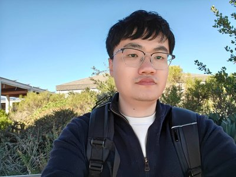

About

I am a Postdoctoral Researcher at Stony Brook University, working with Prof. Jian Li. I received my Ph.D. from the University of Science and Technology of China (USTC), where I was fortunate to be advised by Prof. Xiang-Yang Li and mentored by Prof. Lan Zhang. I received my B.S. from Jilin University, where I was honored to be part of the Tang Aoqing Honors Program in Science. My research focuses on learning theory and sequential decision-making, with applications to large language models.
Learning Theory
Multi-Armed Bandits
Reinforcement Learning
Large Language Models
News
- 2026.01One paper accepted at ICLR 2026.
- 2025.09One paper accepted at NeurIPS 2025.
- 2025.05One paper accepted at ICML 2025.
- 2025.01Two papers accepted at ICLR 2025 and AAAI 2025.
- 2024.09Joined Stony Brook University as a Postdoctoral Researcher.